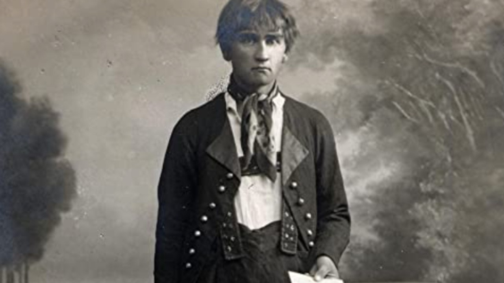
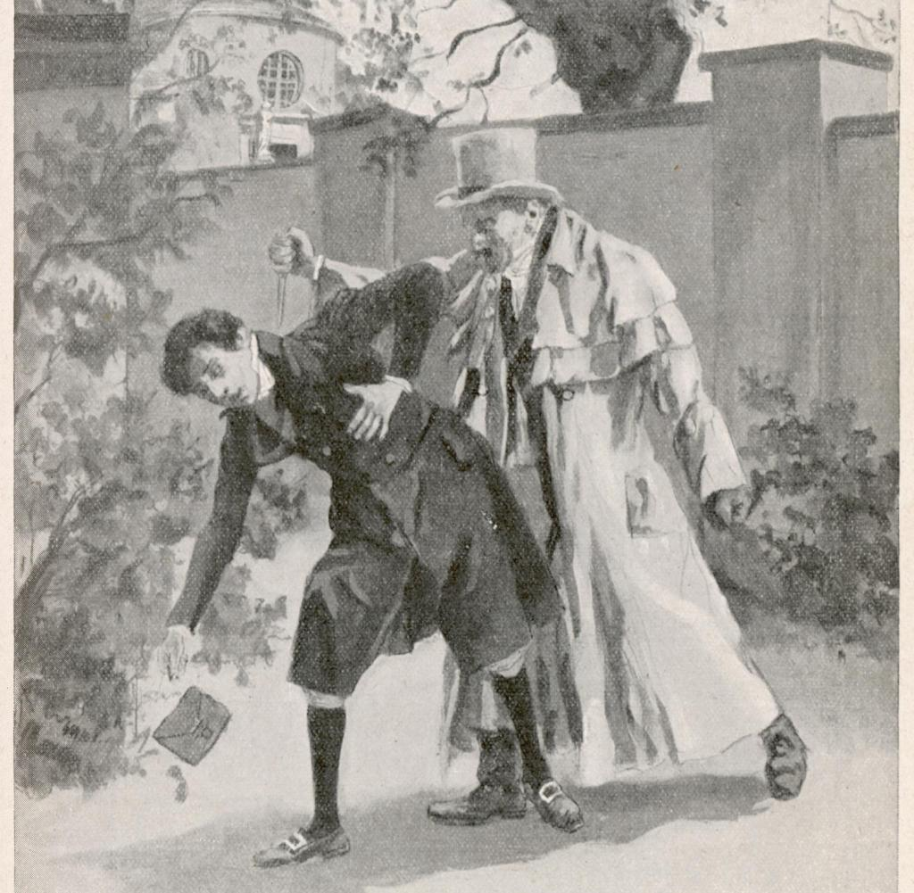
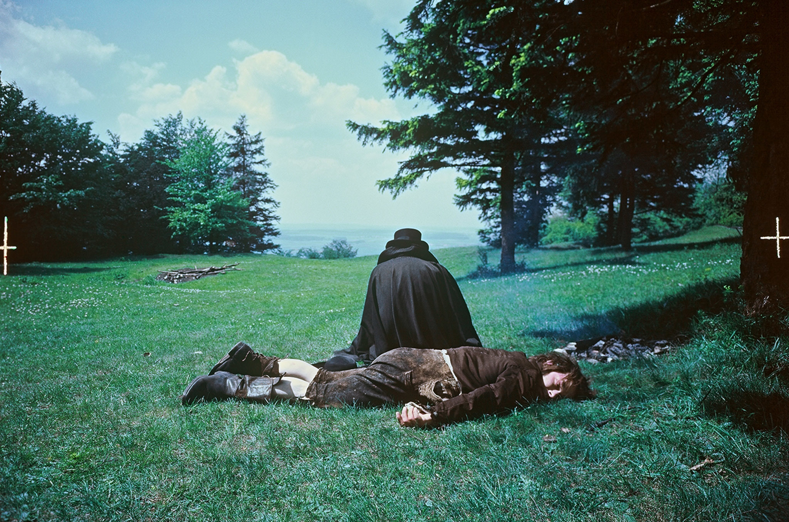

Als Kaspar Hauser 1828 auftauchte, konnte er kaum sprechen und kannte nur wenige Worte. Er lernte langsam zu sprechen, aber viele Zeitgenossen berichteten, dass seine Sprache einfach und kindlich blieb.
Hauser zeigte oft Anzeichen von Naivität und sozialer Unreife, was auf seine angebliche Isolation zurückgeführt wurde. Manche sahen in ihm einen geistig zurückgebliebenen Jungen, andere hingegen vermuteten, dass er durch die Gefangenschaft traumatisiert war.
1833 wurde Hauser tödlich verletzt, als er angeblich in einem Park erstochen wurde. Er sagte vor seinem Tod, ein unbekannter Angreifer habe ihn angegriffen. Es gibt jedoch Theorien, dass er sich selbst verletzt hat, um Aufmerksamkeit zu erregen. Sein Tod bleibt ebenso mysteriös wie sein Leben.
